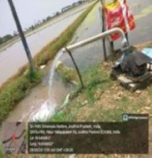

WEEKLY REPORT
WEEK- 3 (From 27-05-24 to 01-06-24)
Objective of the Activity Done: Utilization Of Electricity by Farmers and Related Issues
Detailed Report:
Day 1:
- >On this day our team visited 4th mile in the Nellore district and conducted survey.
- >The fields growing here are very vast in area and greenery finds everywhere.
- >And started asking people about their way of growing.
Day 2:
- >After conversation with farmers, we came to know that solar panels systems are somewhere used./li>
- >Farmers can generate electricity for their own purposes i.e., water motors.
- >Average cost ranges from Rs.35,000 to Rs.55,000 for installation.
Day 3:
- >We questioned them what advantages are by solar panels.
- >We understand that it reduces electricity usage, eco-friendly, easy maintenance.
Day 4:
- >We asked what type of crops are grown by using solar panels.
- >They said,” We grow leafy vegetables, cabbage, root vegetables.”
Day 5:
- We surveyed about factors that influence solar is:
- >Climatic conditions, temperature, weather conditions, location.
- >We came to conclusion of usage of solar panels and profit for the farmers
Day 6:
- >We finally understood that, the working of solar panels, their cost and type of crops grown and factors.
- >And finally, we submitted this week report to our respected guide..
